Cultura general
546 recursos de Cultura general en español, sin preparación y con solucionario: fichas de lectura, búsquedas del tesoro y más, filtrables por grado.
546 recursos
Grado
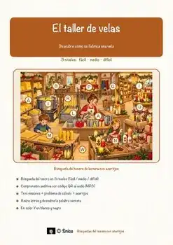
«El taller de velas» – Búsqueda del tesoro de lectura
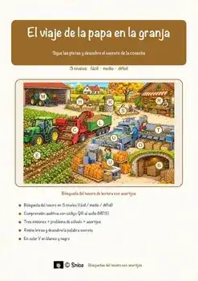
«El viaje de la papa en la granja» – Búsqueda del tesoro de lectura
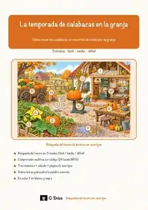
«La temporada de calabazas en la granja» – Búsqueda del tesoro de lectura

Pluma estilográfica – Ficha de lectura: texto con huecos, comprensión auditiva y sopa de letras

Pizza – Ficha de lectura: texto con huecos, comprensión auditiva y sopa de letras

Pippi Långstrump – Ficha de lectura: texto con huecos, comprensión auditiva y sopa de letras

Piel – Ficha de lectura: texto con huecos, comprensión auditiva y sopa de letras

Pelé – Ficha de lectura: texto con huecos, comprensión auditiva y sopa de letras

Payaso – Ficha de lectura: texto con huecos, comprensión auditiva y sopa de letras

Patín sobre ruedas – Ficha de lectura: texto con huecos, comprensión auditiva y sopa de letras

Paralelo – Ficha de lectura: texto con huecos, comprensión auditiva y sopa de letras
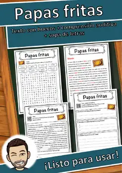
Papas fritas – Ficha de lectura: texto con huecos, comprensión auditiva y sopa de letras
Papa – Ficha de lectura: texto con huecos, comprensión auditiva y sopa de letras
Panthera onca – Ficha de lectura: texto con huecos, comprensión auditiva y sopa de letras
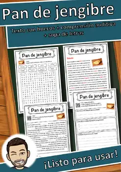
Pan de jengibre – Ficha de lectura: texto con huecos, comprensión auditiva y sopa de letras
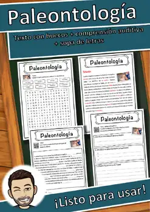
Paleontología – Ficha de lectura: texto con huecos, comprensión auditiva y sopa de letras
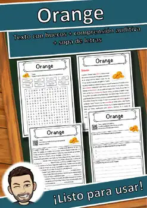
Orange – Ficha de lectura: texto con huecos, comprensión auditiva y sopa de letras
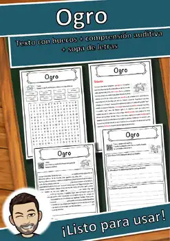
Ogro – Ficha de lectura: texto con huecos, comprensión auditiva y sopa de letras
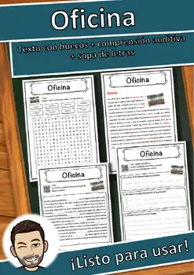
Oficina – Ficha de lectura: texto con huecos, comprensión auditiva y sopa de letras
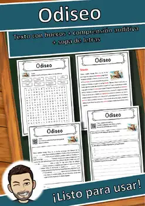
Odiseo – Ficha de lectura: texto con huecos, comprensión auditiva y sopa de letras
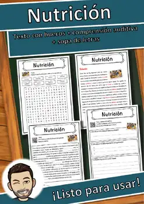
Nutrición – Ficha de lectura: texto con huecos, comprensión auditiva y sopa de letras
Navegación a vela – Ficha de lectura: texto con huecos, comprensión auditiva y sopa de letras
Monociclo – Ficha de lectura: texto con huecos, comprensión auditiva y sopa de letras
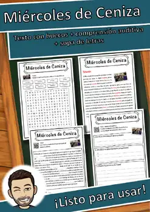
Miércoles de Ceniza – Ficha de lectura: texto con huecos, comprensión auditiva y sopa de letras
Mijo – Ficha de lectura: texto con huecos, comprensión auditiva y sopa de letras
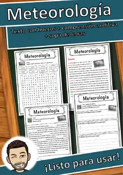
Meteorología – Ficha de lectura: texto con huecos, comprensión auditiva y sopa de letras
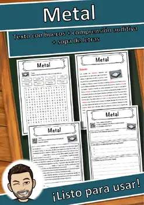
Metal – Ficha de lectura: texto con huecos, comprensión auditiva y sopa de letras
Mensaje en una botella – Ficha de lectura: texto con huecos, comprensión auditiva y sopa de letras
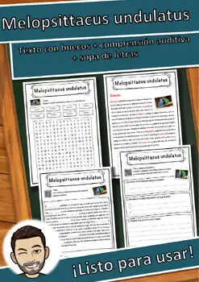
Melopsittacus undulatus – Ficha de lectura: texto con huecos, comprensión auditiva y sopa de letras
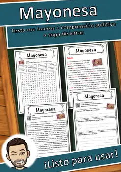
Mayonesa – Ficha de lectura: texto con huecos, comprensión auditiva y sopa de letras
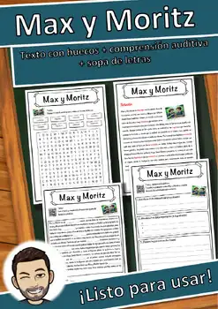
Max y Moritz – Ficha de lectura: texto con huecos, comprensión auditiva y sopa de letras
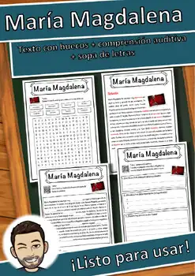
María Magdalena – Ficha de lectura: texto con huecos, comprensión auditiva y sopa de letras
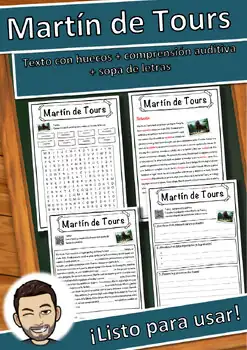
Martín de Tours – Ficha de lectura: texto con huecos, comprensión auditiva y sopa de letras
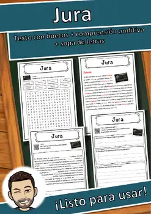
Jura – Ficha de lectura: texto con huecos, comprensión auditiva y sopa de letras
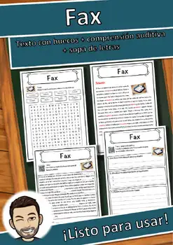
Fax – Ficha de lectura: texto con huecos, comprensión auditiva y sopa de letras
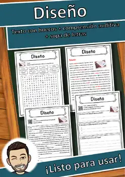
Diseño – Ficha de lectura: texto con huecos, comprensión auditiva y sopa de letras
Club – Ficha de lectura: texto con huecos, comprensión auditiva y sopa de letras
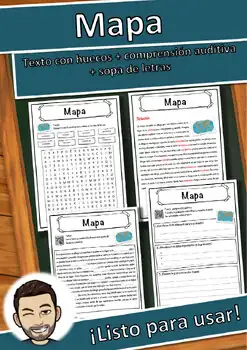
Mapa – Ficha de lectura: texto con huecos, comprensión auditiva y sopa de letras
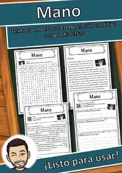
Mano – Ficha de lectura: texto con huecos, comprensión auditiva y sopa de letras
Láser – Ficha de lectura: texto con huecos, comprensión auditiva y sopa de letras
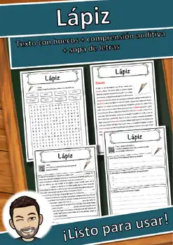
Lápiz – Ficha de lectura: texto con huecos, comprensión auditiva y sopa de letras
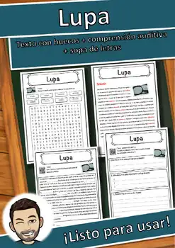
Lupa – Ficha de lectura: texto con huecos, comprensión auditiva y sopa de letras
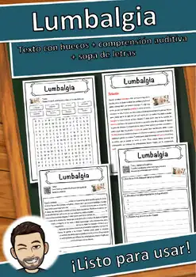
Lumbalgia – Ficha de lectura: texto con huecos, comprensión auditiva y sopa de letras
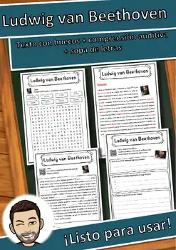
Ludwig van Beethoven – Ficha de lectura: texto con huecos, comprensión auditiva y sopa de letras
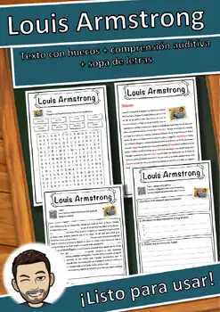
Louis Armstrong – Ficha de lectura: texto con huecos, comprensión auditiva y sopa de letras
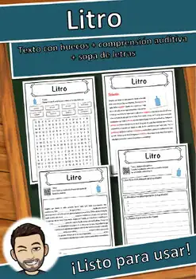
Litro – Ficha de lectura: texto con huecos, comprensión auditiva y sopa de letras
Lima – Ficha de lectura: texto con huecos, comprensión auditiva y sopa de letras
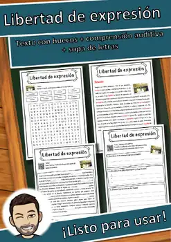
Libertad de expresión – Ficha de lectura: texto con huecos, comprensión auditiva y sopa de letras
No se encontraron recursos. Prueba con otra palabra o con otro filtro.